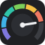

Max Theme MakerDesign color themes for Max and save them as .maxtheme files. Every one of Max's ~280 interface colors can be edited, with a live preview of the whole interface.
The themes that ship with Max and its theme engine are read from your own copy of Max. Nothing is uploaded: everything stays in your browser.
Or choose its interfaces folder. The macOS file dialog does not open apps, so press ⌘⇧G in it and paste this path (with your app's name, for example Max 9.app):
/Applications/Max.app/Contents/Resources/C74/interfacesOn Windows: C:\Program Files\Cycling '74\Max 9\resources\interfaces.
Documents/Max 9/Packages folder once. Themes go to Packages/Custom Themes/interfaces/themes.Documents/Max 9/Packages/Custom Themes/interfaces/themes.Not affiliated with Cycling '74. Max is a trademark of Cycling '74. Themes and the theme engine are read from your own installation and never redistributed.